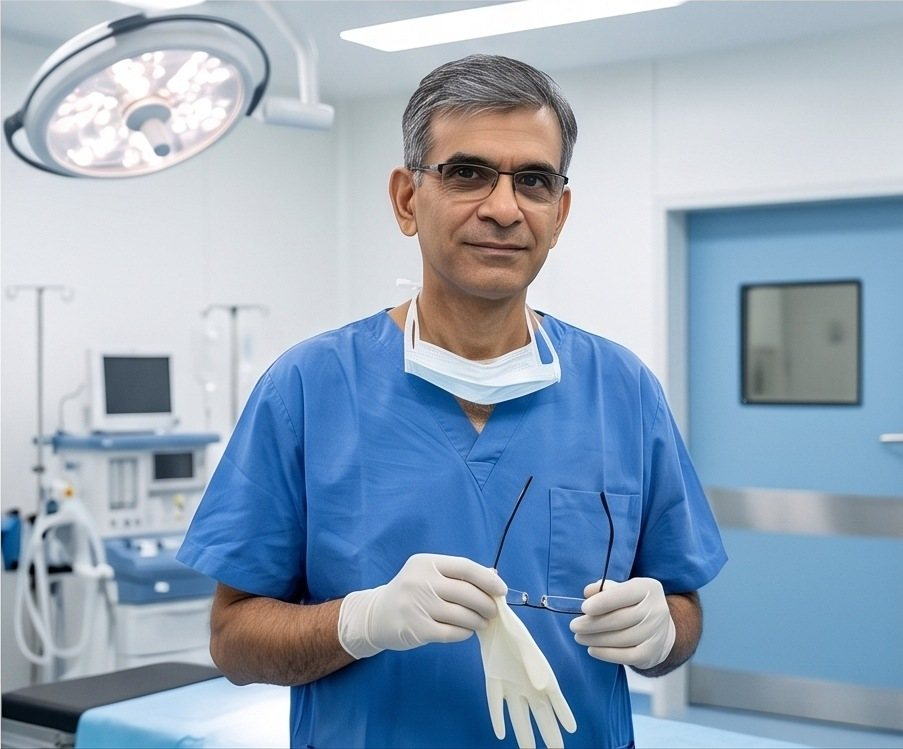

Careful answers for the gut.
Dr. Firoz Alimohamed is a consultant gastroenterologist at The Mombasa Hospital. He has treated digestive and liver disease, and performed diagnostic and therapeutic endoscopy, since 2005.
Consulting rooms
Suite 5, The Mombasa Hospital. Open 9am to 5pm, Monday to Friday.
Across the city
Dr. Firoz visits all the major hospitals in Mombasa and holds gastroenterology consultations at the Aga Khan Hospital.
Teaching
Honorary lecturer on the ECSACOP postgraduate programme, training the region's next physicians.
One continuous passage
The digestive system is one passage from mouth to colon, and a symptom in one part is often a signal from another. That is why the whole tract is examined, not just the place that hurts.

- Oesophagus
- Stomach
- Liver & bile ducts
- Small bowel
- Colon
Gastroscopy reaches the top of this passage. Colonoscopy reaches the bottom. Between them, most of what goes wrong can be seen directly.

Where people start
The symptoms that bring people here
- Bloating
- Heartburn
- Abdominal pain
- Constipation
- Jaundice
- Difficulty swallowing
- Blood in the stool
- Unexplained weight loss
Symptoms overlap. Heartburn can be reflux or an ulcer; bloating can be irritable bowel or something structural. The point of a specialist consultation is to tell them apart before treatment begins.
Conditions treated
Five of the conditions seen most often
-
 Stomach & duodenum
Stomach & duodenumPeptic ulcers
Open sores in the lining of the stomach or the first part of the small bowel. They cause gnawing upper abdominal pain and can bleed. Most are linked to H. pylori infection or to long term anti inflammatory tablets, and both causes are treatable.
-
 Whole bowel
Whole bowelIrritable bowel syndrome
Pain, bloating and a changed bowel habit without damage visible in the bowel wall. It is diagnosed carefully, by first ruling out the conditions that look similar, and then managed with diet, targeted medicines and follow up.
-
 Immune inflammation
Immune inflammationInflammatory bowel disease
Crohn's disease and ulcerative colitis inflame and ulcerate the bowel wall, causing diarrhoea, bleeding, pain and weight loss. Both need confirmed diagnosis by endoscopy and biopsy, then treatment that keeps the disease quiet for years.
-

Screening mattersColon cancer
Most colon cancers begin as polyps that cause no symptoms at all. Colonoscopy finds them and removes them in the same session, which is why screening from your fifties, or earlier with a family history, changes outcomes.
-
Liver
Hepatitis
Inflammation of the liver, from viral infection, alcohol, medicines or fat deposits. It can be silent for years before jaundice appears. Blood tests, imaging and, where needed, liver biopsy establish the cause and guide treatment.
-
Not on the list?
Bring the symptom, not the diagnosis
Reflux, coeliac disease, gallstones, pancreatitis, swallowing problems and unexplained anaemia are all part of routine gastroenterology practice. Describe what you are feeling. Naming it is the specialist's job.
Diagnostic and therapeutic endoscopy
A camera answers in minutes what tests can only suggest
An endoscope is a thin flexible tube with a light and a camera. It shows the lining of the gut directly, takes biopsies, stops bleeding, removes polyps and widens narrowed passages. Diagnosis and treatment happen in the same sitting.
-
1
Before
You are told exactly what to stop eating and when, and which of your regular medicines to pause. Preparation is most of the work.
-
2
Sedation
Light sedation keeps you comfortable and relaxed. You will be monitored throughout, and most people remember very little of it.
-
3
The examination
Fifteen to forty minutes. The lining is inspected, biopsies are taken if needed, and polyps are removed as they are found.
-
4
After
You rest until the sedation wears off, then hear the findings in plain language, with written results and a clear next step.
Endoscopy lists run across the city
Inpatient reviews and procedure lists take place at all the major Mombasa hospitals, so an urgent finding on the ward does not have to wait for a clinic appointment.

Training
Three universities, three continents
-
Istanbul, Türkiye
Istanbul University
Undergraduate medical degree, the foundation of clinical practice.
-
Nairobi, Kenya
University of Nairobi
Postgraduate degree in Internal Medicine, the discipline behind every gastroenterology decision.
-
Johannesburg, South Africa
University of the Witwatersrand
Fellowship training in Gastroenterology, including advanced diagnostic and therapeutic endoscopy.


Finding the clinic
The Mombasa Hospital, Suite 5
Consultations run from the suite through the working week. Inpatient reviews and endoscopy lists take place across the city's major hospitals, and gastroenterology clinics are also held at the Aga Khan Hospital.
- Monday to Friday9:00am to 5:00pm
- SaturdayBy arrangement
- SundayClosed
- Urgent inpatient referralsThrough the hospital
Stop guessing about your symptoms
Bring the symptom you have been living with. You will leave with an explanation you understand and a plan you can follow.